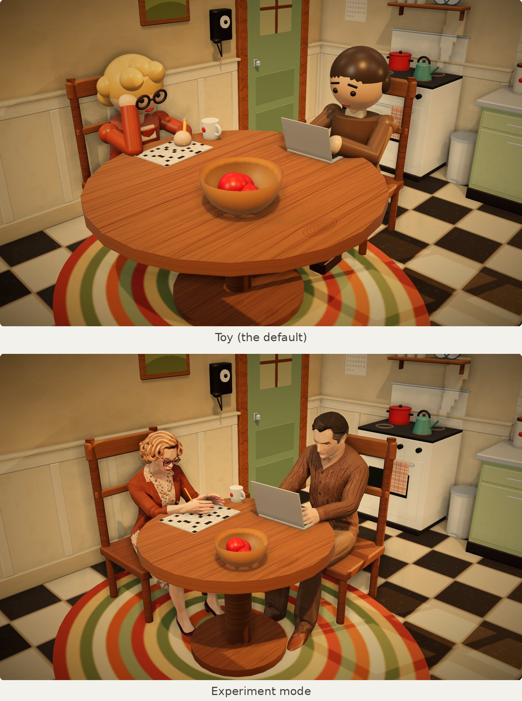
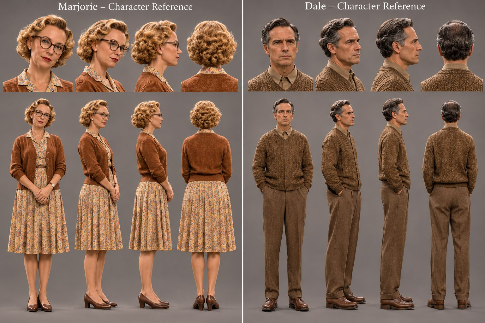
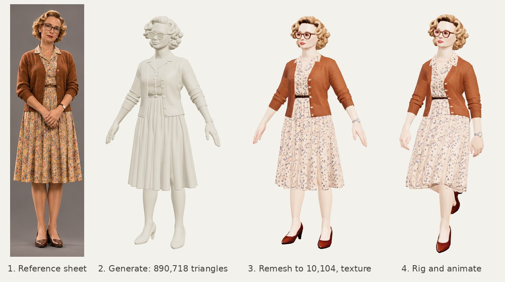
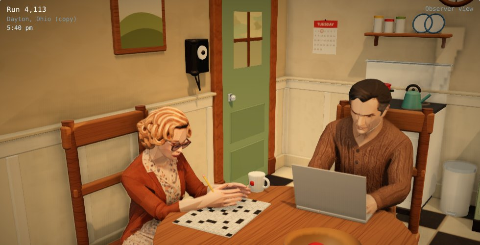

Building a 3D World for a Short Story
Doctor Bones is a short story about a copy of a man. A young man builds Dale Hubbard out of everything Dale ever posted online, then sits in a room with no windows and waits for the copy to type Dale's bank password. After I wrote it, I wanted to watch that kitchen the way the young man does. So I built it as a 3D world that runs in a browser, first with toy figures and then with characters that look like people.
Claude wrote the code. Meshy turned one character reference sheet into rigged 3D models of Dale and his wife, Marjorie. This post covers the tools, how they fit together, and what still looks wrong. It skips most of the wrong turns.

The story picture was the spec
The story page has one picture: Marjorie at the kitchen table with her crossword, Dale on the floor with the dog, warm late light, sage cabinets, a checkerboard floor and a window of small panes. I told Claude to treat that picture as the design standard. Every change to the room was checked against it.

A kitchen built from code
The first version uses no 3D files at all. It is one HTML page with three.js, and every object is built from boxes, cylinders and spheres: the cabinets, the stove, the fridge, the table and two toy figures. That kept the page small and easy to change. When I asked for the wainscoting in a 1950s cream, or a fall afternoon outside the window, Claude changed the code and I looked at the result.
Three things made the room feel alive:
- Habits. Each character has a short weighted list of things to do, such as the crossword, a sip of coffee or a look at the clock. One is picked at random every few seconds, so the room never repeats exactly.
- A world that builds itself. Each piece appears as a wireframe and then turns solid. You can click anything to inspect it. The coffee's temperature says "Never changes".
- A Look menu. It raises the realism while the scene runs: sunlight and reflections, then textures painted in code (wood grain, floor tiles, plaster), then ambient occlusion, a soft glow and a warm color grade like the story picture.
Claude could not see my screen, so it tested its own work. It ran the page in a headless Chrome browser with Playwright, took screenshots and looked at them before showing me. That browser has no graphics card and runs the kitchen at a few frames a second, so the tests pause the world at the moment they need to photograph.
From a reference sheet to rigged characters with Meshy
The toy figures were fun, but I wanted to see how far the realism could go. Meshy is a web app that makes 3D models from images, and it can rig and animate them too. Each character went through the same four steps.
- A character reference sheet. I generated one image with ChatGPT that shows Marjorie and Dale from the front, the three-quarter view, the side and the back, in the same clothes and light. It became the style guide for both of them.
- Image to 3D. I cut the sheet into separate views and gave Meshy the views of one character at a time. The first result is a detailed mesh with no color. Marjorie's has 890,718 triangles.
- Remesh and texture. Meshy reduces the mesh to about 10,000 triangles and paints the textures from the reference images.
- Rig and animate. Meshy's auto-rigging adds a humanoid skeleton with the usual Mixamo bone names, plus walking and running clips. I downloaded each character as one GLB file with all of its animations.


One setting mattered more than the rest. My first Marjorie was generated in the pose from the sheet, with her hands folded in front of her dress. The rig attached her hands to the dress, so the dress stretched every time she moved her arms. Generating her again in an A-pose, with her arms away from her body and her feet apart, fixed it. If you plan to rig a character, make it in that pose from the start.
Getting the models into the page
Meshy's files were 28 to 46 MB, mostly because of 4K PNG textures. A short Python script re-encodes the textures as JPEG, 2048 pixels for the color and 1024 for the roughness map, and leaves the geometry alone. Marjorie came down to 2.6 MB and Dale to 1.9 MB. three.js loads them with its GLTFLoader, and only when someone turns on Experiment mode.
Meshy's walk clip plays when they walk. Everything else is posed in code. Each frame starts from the rest pose. The code turns the head and spine toward what the person is looking at, and a small two-bone solver puts each hand where it needs to be: the pencil on the crossword, the cup at her mouth, the phone at her ear. Then the bones ease toward that pose, so every move is smooth. Marjorie has her own habits now, and she answers the phone. Dale copies a hidden toy Dale every frame, so he kept all of the habits the toy already had.
Real-size people also showed which parts of the room were toy-sized. The room itself was about right, but the table was 1.67 m across and the dog was as tall as a Great Dane. Experiment mode shrinks the table to 1.1 m and makes the cup, the dog and the cat real size.

Two fixes are worth knowing if you try this with three.js r128:
- Pale faces. The models took the room's reflected light at full strength, while the room's own materials take about a third of it. Matching that setting fixed the washed-out skin.
- A halo when they moved. The ambient occlusion pass drew the people in their rest pose, not their current pose, so the shading lagged behind them. Putting the people on their own layer and drawing them in that pass with a skinned material fixed it.
What still looks wrong
It is a lot closer to the story picture than the toys were, but it is not there yet.
- Hands. When Dale sits on the floor with his arms around his knees, his hands do not cross well. Marjorie cannot hold a pencil or a coffee cup in a way you believe. The code moves the arms, but it does not pose the fingers, so the hands never really close around anything.
- Sitting down. They are meant to walk to the chair, turn and sit. Instead they tend to circle it first, the way my dog circles before he lies down.
- Resolution. The models are less detailed than what Meshy can make, because I shrank the textures for the web. Next I want to look at better compression, since three.js can load compressed geometry (Draco) and compressed textures (KTX2). I also want to try spending the detail where people look, on the hands and the face.
The tools
| Tool | What it did |
|---|---|
| Claude | Wrote and changed the code from my descriptions, and checked its own screenshots |
| three.js (r128) | The scene, materials, lighting, shading and the model loader |
| Meshy | Image to 3D, remeshing, texturing, rigging and the walk clip |
| ChatGPT | The character reference sheet |
| Python with Pillow | Shrinking the model textures |
| Playwright and headless Chrome | Screenshots for testing |
| Web Audio | The radio's song, made in the page |
| GitHub Pages | Hosting |
Try it
This is the same world that runs under the story. Tick Experiment mode to swap the toys for Marjorie and Dale. Have Dale log in to the bank, then give him a dog from the Add menu and ask him its name.
The kitchen was also the first step toward a 3D office for my Claude Code sessions, which I wrote about in An Office for My Claude Code Sessions.